Skulltag 連線設定簡易教學
此說明文件已經過作者 Stranger 先生同意收錄於此
一、假設您已經安裝完成，請打開該目錄找到：skulltag.exe並執行！
這會直接進入單機版，因為一開始相關配置都為預設，但每個人的習慣都不同..
所以我建議您先從單機版裡設定，免得直接進入網路版時會手忙腳亂。
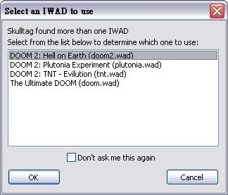
（選擇其中一個版本進入都可以）
二、第一次進入後隨便按一個按鍵應該就會看到類似下面的選單，我們先選擇『設定選項』這個項目！
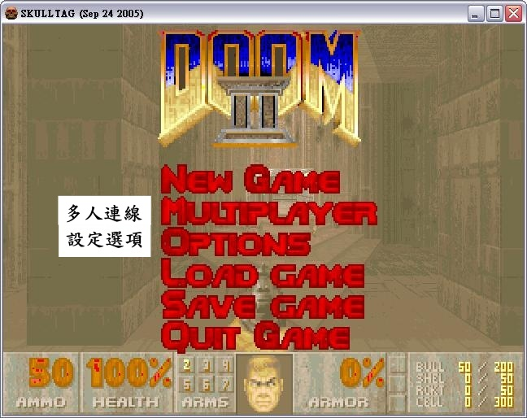
三、緊接著便會看到裡面有多種設定選擇，同樣的請先選擇第一個『鍵盤按鍵設置』來設定鍵盤的按鈕配置！
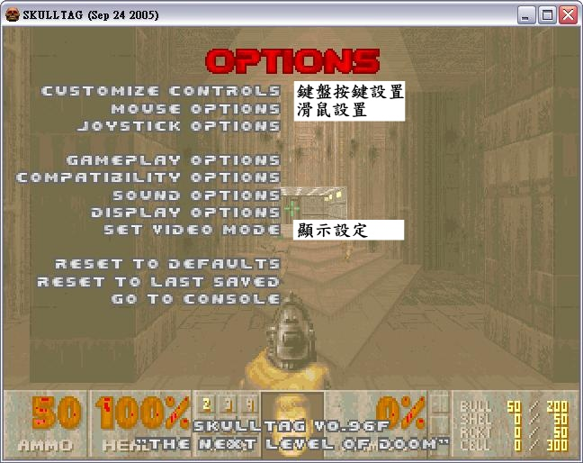
四、請參照下圖的中文解說來配置符合您習慣的按鍵分配！（鍵盤的上下控制游標、Enter 鍵開始設定）
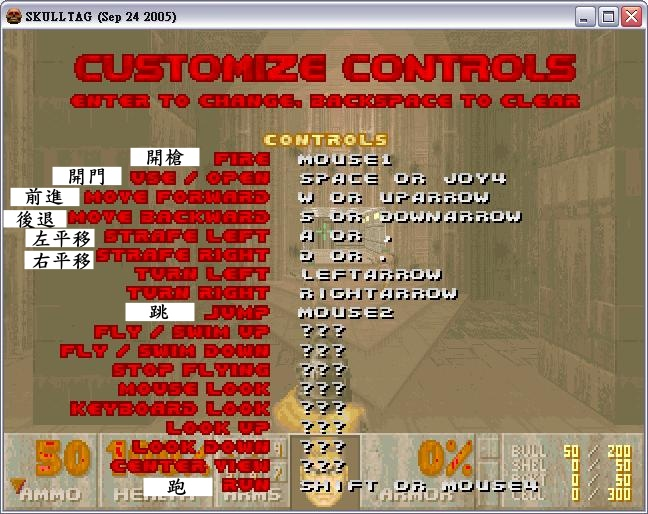
五、鍵盤設置完畢後接著請回到上一層（按 Esc）返回，並進入滑鼠的設置頁面，同樣請參考下圖的配置說明！（滑鼠控制視點請務必打開）
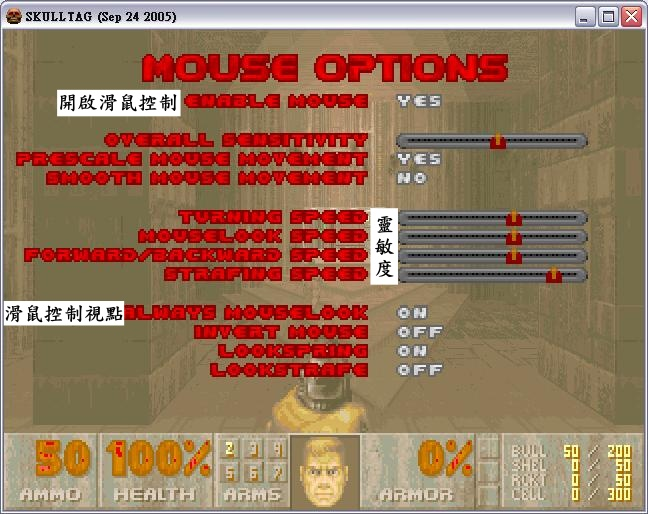
六、接著便是顯示的設定，全螢幕請設定為 Yes ，解析度則依照您的習慣來選擇，通常建議您改為 1024x768 較為適合！
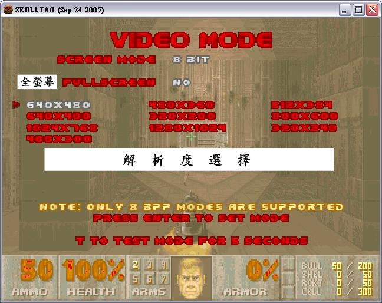
七、這時基本配置已經完成，接著回到一開始的選單，請選擇『多人連線』！
選擇圖中的『玩家設定』來配置玩家們的基本參數
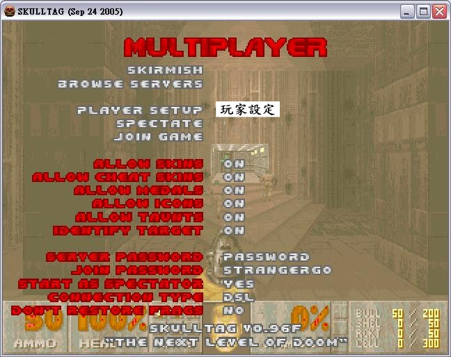
八、同樣請參考下圖的中文說明來配置！
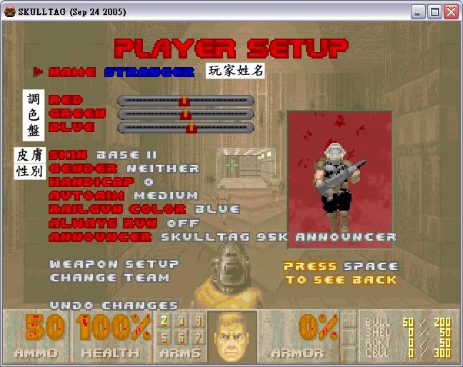
這裡額外說明第一個『玩家姓名』部分，這裡是可以改顏色的，在名字的前面加入 \CX 便可設定不同顏色，X 為色碼請參考下表
| X | |||||
|---|---|---|---|---|---|
| A:Reddish brick | B:Tan | C:White | D:Green | E:Brown | F:Gold |
| G:Red | H:Blue | I:Orange | J:White | K:Yellow | |
例如我的名字為：STRANGER 想設定為藍色，則輸入：\CHSTRANGER
九、到這裡..基本的配置應該都已經完成了，接下來就是進入網路跟大家一起同樂囉！（如果您還在剛才的設定畫面，請按 Esc 退回第一層選單並選擇 QUIT GAME 離開）接著請雙擊 IdeSE.exe ，稍待一會兒等程式更新伺服器列表之後應該會出現類似如下圖..
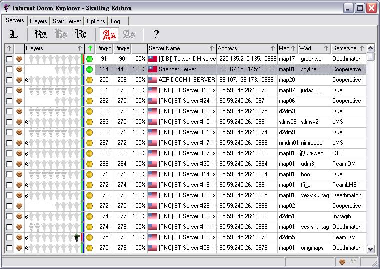
請選擇一個自己喜歡的伺服器雙擊滑鼠左鍵後進入吧，請注意..請優先選擇 Ping 值低的伺服器進入，越高玩起來越 Lag..最後一個（Gametype）則為遊戲模式..
Deathmatch 為死鬥、Cooperative 為合作過關
上圖中只有兩個 台灣 的伺服器，第一個是國內最大的 Doomer 集散地（毀滅戰士營）營長所開設的伺服器..
而第二個就是我自己開的囉..因為我的頻寬不大所以不一定永遠開著，且只能容納四個人同時進入..
十、當您選中其中一個伺服器想要進入的時候，有可能會跳出如下的圖..
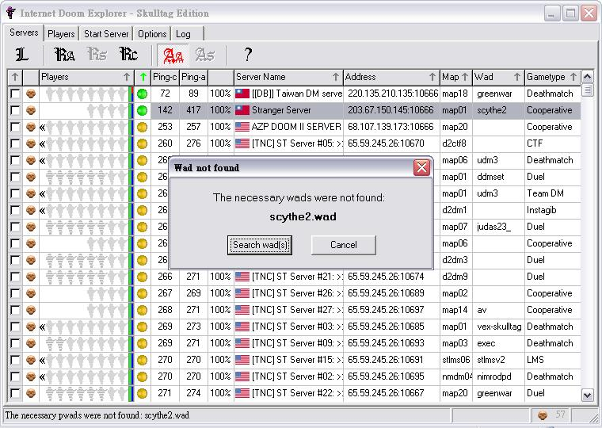
這是告知您..您沒有跟伺服器一樣的 WAD 地圖檔！這時別擔心，請按下左邊的 Search wad 按鈕..便會出現類似下圖..
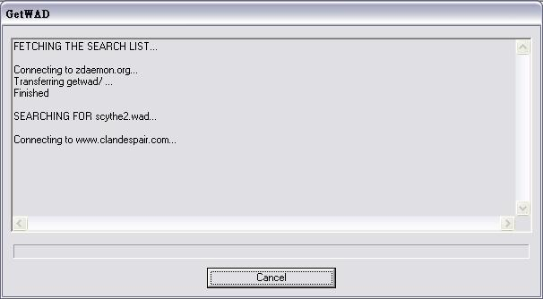
程式會自動連上網抓取所需要的地圖檔，依照您的頻寬與地圖檔的大小所需要等待的時間不一定，這時您只要泡杯咖啡坐著等就好..方便吧？...XD
不過強烈建議您不要邊玩邊喝..因為緊張刺激的戰況，您不是沒時間喝、就是會噎著或打翻..為了您的寶貝電腦好..把飲料放遠一點吧～
所有圖片為我自己親自抓圖並加上中文說明，請勿未經同意取用..盜用者..切GG！
Written By Stranger
Modify By Darway